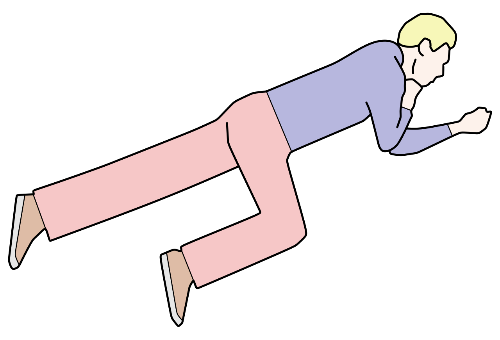
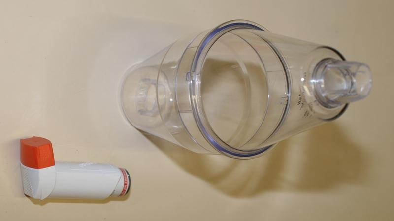
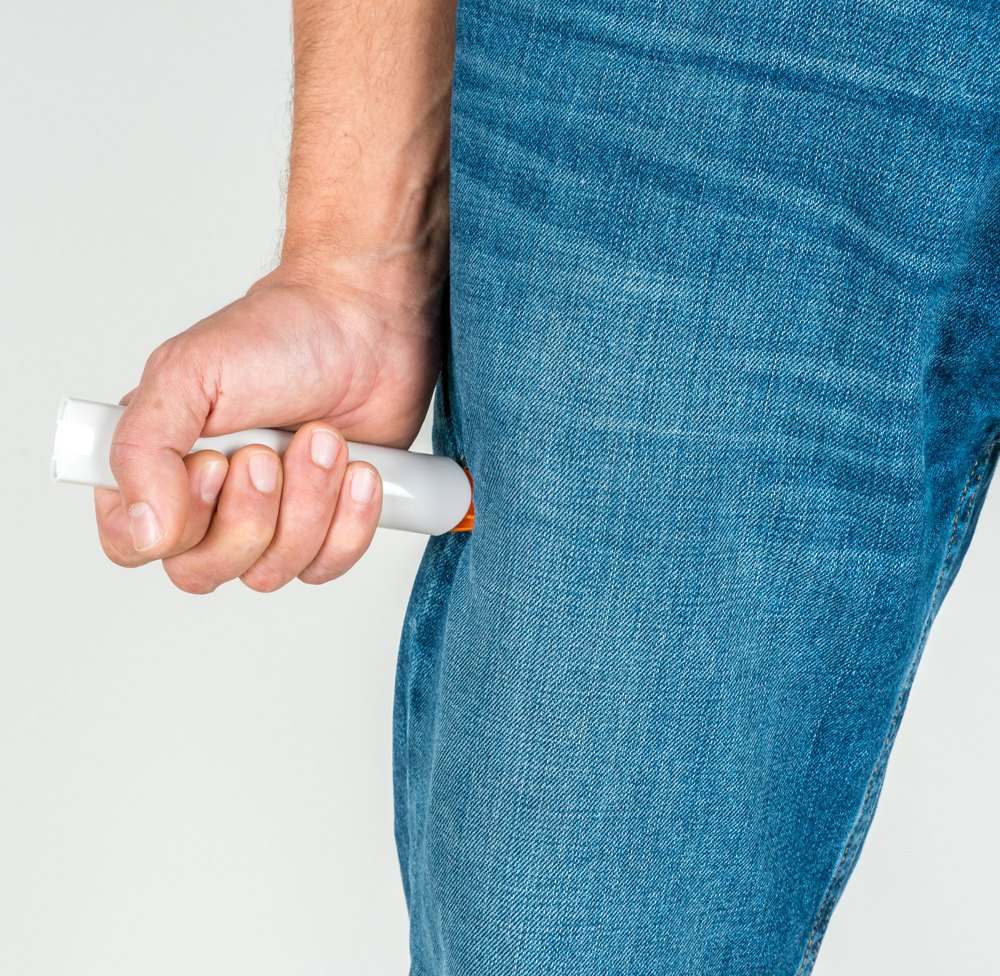

Corso per cittadini e volontari. Riconoscere, chiamare il 112, proteggere e fare i gesti giusti finché arrivano i soccorsi.
Misericordia di Ariccia
Che cosa dire: presentatevi, dite chi è la Misericordia di Ariccia e che il corso segue le Linee guida 2025 di Italian Resuscitation Council (IRC), capitolo 12 «Primo soccorso». Chiedete ai corsisti che cosa si aspettano e se hanno già dovuto aiutare qualcuno: il capitolo ricorda che chi ha già visto un malore è più disposto ad aiutare e a formarsi (IRC 2025, cap. 12, p. 22). Errore frequente: promettere che «dopo il corso saprete fare tutto». Fonte: IRC 2025, cap. 12, pp. 5-6.
Corso Primo soccorso
Prima di cominciare
Queste slide accompagnano il materiale ufficiale del corso e la pratica con l'istruttore. Non lo sostituiscono.
Il riferimento sono le Linee guida 2025 di Italian Resuscitation Council, capitolo 12 «Primo soccorso», e le indicazioni ufficiali dello Stato e della Regione Lazio.
Rianimazione e disostruzione hanno lezioni e slide loro: qui le richiamiamo soltanto.
Le manovre si provano solo in aula, con l'istruttore, sui manichini o tra corsisti che lo accettano.
Misericordia di Ariccia
Che cosa dire: le slide sono un supporto; fanno fede il materiale ufficiale consegnato ai corsisti e le indicazioni dell'istruttore. Il capitolo 12 chiede corsi adattati a chi partecipa e al contesto, che preparino anche a gestire ansia e stress prima e dopo il soccorso, e che spieghino le tutele di legge per chi presta soccorso: dedicateci qualche minuto con il materiale del corso. Errore frequente: far provare manovre senza chiedere il consenso del compagno. Fonte: IRC 2025, cap. 12, p. 5 (tabella 1) e p. 6 («Corsi di primo soccorso»).
Corso Primo soccorso
Il ruolo del soccorritore: tre regole
Controlla che la scena sia sicura, per te e per gli altri.
Chiama il 112 il prima possibile.
Usa solo attrezzature e medicinali per i quali hai avuto una formazione.
Il primo soccorso può evitare altri danni, migliorare le condizioni della persona e salvarle la vita. A volte l'unico gesto possibile è la telefonata: anche quella è primo soccorso.
Misericordia di Ariccia
Che cosa dire: sono i tre principi chiave che il capitolo 12 chiede a ogni soccorritore. Il terzo vale anche per i farmaci della persona: la aiutiamo a usare i suoi (spray per l'asma, autoiniettore), non ne diamo di nostri. Errori frequenti: correre verso la persona senza guardare intorno; rimandare la chiamata per «vedere prima come sta». Fonte: IRC 2025, cap. 12, p. 6 («Aspettative nei confronti del soccorritore») e p. 22.
Corso Primo soccorso
Prima la sicurezza
Prima di avvicinarti guarda: traffico, fuoco o fumo, gas o prodotti chimici, corrente elettrica, persone violente.
Su strada: quattro frecce, giubbotto catarifrangente, triangolo ad almeno 50 metri.
Se li hai, indossa i guanti.
Se il pericolo resta, non entrare: chiama il 112 e aspetta i soccorsi.
Un soccorritore ferito è una persona in più da soccorrere.
Misericordia di Ariccia
Che cosa dire: la «S» di sicurezza viene prima di tutto lo schema di valutazione; il capitolo fa gli esempi di traffico, sostanze chimiche e persone violente. Le regole della strada sono quelle della scheda «Incidente stradale» del dossier del sito. Per gas e fumi: si esce o si porta fuori la persona solo senza mettersi in pericolo (schede «Avvelenamento» e «Monossido»). Errore frequente: fermarsi in mezzo alla carreggiata. Fonti: IRC 2025, cap. 12, p. 6 e p. 9 (tabella 3, «S – Sicurezza»); dossier del sito, scheda «Incidente stradale» (Codice della strada per il triangolo a 50 metri).
Corso Primo soccorso
112 o 116117?
112
Emergenze
Pericolo per la vita o per la sicurezza: malore grave, incidente, incendio, reato in corso. Gratis, 24 ore su 24, anche senza credito.
116117
Cure non urgenti
Problemi di salute non urgenti: consiglio sanitario o guardia medica. Gratis, attivo in tutto il Lazio dal 24 agosto 2026; risponde ARES 118.
Se durante una chiamata al 116117 emerge un'emergenza, la telefonata passa in automatico al 118.
Misericordia di Ariccia
Che cosa dire: nel Lazio il 112 è il Numero Unico di Emergenza; per un problema di salute la chiamata passa alla centrale del 118 di ARES 118. Il 116117 non è un numero «di riserva» per le emergenze. Errore frequente: chiamare il 116117 per un dolore al petto o un ictus per «non disturbare». Testi uguali alla guida del sito «Chiamare il 112» (content/dossier/chiamare-il-112.md). Fonte: Regione Lazio, «Salute, attivo in tutta la regione il numero 116117» (regione.lazio.it), voce 116117-lazio del registro dei dati del sito, verificata il 16/11/2026.
Corso Primo soccorso
La chiamata al 112
Dove sei: comune, via, numero civico, scala, piano, nome sul citofono; in strada direzione, chilometro o un punto di riferimento.
Che cosa è successo e quante persone sono coinvolte.
Come sta: risponde? respira? sanguina? ha dolore?
Metti il vivavoce e non riattaccare finché l'operatore non te lo dice.
Misericordia di Ariccia
Che cosa dire: la posizione del cellulare arriva da sola (AML), ma scala, piano e citofono li sai solo tu. Le domande del 118 non fanno perdere tempo: mentre si risponde l'ambulanza può essere già partita. Finita la chiamata, il telefono resta libero: la centrale può richiamare. In un sospetto arresto cardiaco l'operatore guida la rianimazione al telefono (IRC 2025, cap. 12, p. 7). Errori frequenti: dare solo «sono in via Roma» senza comune; riattaccare per primi. Fonti: guida del sito «Chiamare il 112» (Regione Lazio, ARES 118, Ministero dell'Interno); IRC 2025, cap. 12, pp. 6-7.
Corso Primo soccorso
Avvicinarsi alla persona
Sicurezza della scena.
Risponde? Toccala delicatamente sulle spalle e chiedi ad alta voce: «Sta bene?».
Sanguina molto? Un'emorragia grave si ferma subito, prima di tutto il resto.
Poi guardala con ordine, dalla testa ai piedi, con lo schema ABCDE, in pochi minuti.
Se risponde: guardala, chiedile che cosa sente, se ha allergie o malattie, e chiedi il permesso prima di toccarla.
Misericordia di Ariccia
Che cosa dire: è l'ordine della valutazione strutturata del capitolo 12: sicurezza, responsività, emorragia massiva, poi ABCDE. La valutazione deve essere accurata ma durare pochi minuti; con una persona sveglia si chiede il consenso prima di cercare segni di malattia o di trauma. Errore frequente: concentrarsi sulla ferita più vistosa e non accorgersi che la persona non risponde. Fonte: IRC 2025, cap. 12, p. 8 (figura 2), p. 9 (tabella 3) e p. 24.
Corso Primo soccorso
Lo schema ABCDE
A
Vie aeree. Sono libere? È caduta dall'alto o ha avuto un trauma forte? Allora non muoverla e tieni ferma la testa.
B
Respiro. Respira normalmente? Fischi, labbra o lingua gonfie, soffocamento, labbra blu?
C
Circolazione. Dolore al petto? Pelle pallida, fredda, sudata, capogiri: possibile shock.
D
Coscienza. È sveglia, confusa, risponde alla voce, solo al dolore o per niente?
E
Esposizione. Altre ferite, dalla testa ai piedi? Proteggila dal freddo e dal caldo.
Misericordia di Ariccia
Che cosa dire: per ogni lettera la tabella 3 del capitolo indica un'azione immediata, che vedremo nelle slide dei singoli temi (adrenalina per l'anafilassi, aspirina per il dolore toracico, zucchero per l'ipoglicemia, stop all'attività per la commozione cerebrale, coperte contro l'ipotermia). D: la scala ACVPU (vigile, confusione nuova, risponde alla voce, al dolore, non risponde). Shock: la persona resta supina; sollevare le gambe è solo una misura temporanea, non di routine. Ossigeno e pulsossimetro solo per chi è addestrato. Errore frequente: spostare o mettere seduta una persona in shock. Fonte: IRC 2025, cap. 12, p. 9 (tabella 3) e p. 24.
Corso Primo soccorso
Non risponde: respira normalmente?
Chiama il 112 con il vivavoce e guarda, ascolta e senti il respiro per non più di 10 secondi.
Non respira normalmente
Non respira o fa respiri rari e rumorosi: inizia la rianimazione e segui l'operatore. Si impara nella lezione BLSD.
Respira normalmente
Senza un trauma: posizione laterale di sicurezza e controlla spesso il respiro. Dopo un trauma: non muoverla.
Misericordia di Ariccia
Che cosa dire: è la «regola comune» del dossier del sito, valida per tutte le schede: chi non risponde si gestisce chiamando il 112 e guardando se respira normalmente. I respiri rari e rumorosi (respiro agonico) non sono respiro normale: si comincia la rianimazione, senza paura di fare male. Qui solo il rimando: compressioni e DAE si fanno nella lezione e con le slide BLSD. Errore frequente: mettere in posizione laterale una persona con respiro agonico. Fonti: IRC 2025, cap. 12, p. 7 («Arresto cardiaco»), p. 8 («Posizione laterale di sicurezza») e p. 9 (tabella 3, B); registro del sito, voce «regola comune» della rubrica.
Corso Primo soccorso
Posizione laterale di sicurezza
Gambe distese; il braccio vicino a te ad angolo retto.
Il dorso dell'altra mano sulla guancia rivolta verso di te.
Piega la gamba lontana, piede a terra, e falla rotolare verso di te.
Anca e ginocchio di sopra ad angolo retto; testa un po' indietro, bocca verso il basso.

Illustrazione: Mrmw, Wikimedia Commons, CC0
Resta con lei e controlla spesso il respiro. Se smette di respirare normalmente: a pancia in su e rianimazione.
Misericordia di Ariccia
Che cosa dire: si usa per adulti e bambini con ridotto livello di coscienza, di origine non traumatica, che respirano normalmente. Le Linee guida 2025 ammettono due varianti, con il braccio di sotto piegato o disteso (studio senza differenze per circolazione e comfort): mostrate quella del materiale del corso; l'illustrazione mostra la variante con il braccio piegato, la stessa della scheda del sito. Errori frequenti: usarla dopo un trauma (caduta dall'alto, incidente: la persona resta supina e non si muove) o con respiro agonico; lasciare la persona da sola. Fonti: IRC 2025, cap. 12, p. 8 e p. 10 (figura 3, braccio piegato A e disteso B), p. 24 («Posizione laterale di sicurezza»); dossier del sito, scheda «Posizione laterale di sicurezza» (testo identico).
Corso Primo soccorso
Emorragia grave: premi e non mollare
Se li hai, guanti.
Premi forte direttamente sulla ferita, con una garza sterile o un panno pulito.
Mantieni la pressione senza mollare finché arrivano i soccorsi.
Chiama il 112, o fallo chiamare da chi è con te.
Non sollevare la garza per controllare. Non estrarre oggetti conficcati: premi intorno.
Misericordia di Ariccia
Che cosa dire: la pressione manuale diretta è la prima scelta; il capitolo dice di mettere una medicazione (normale o emostatica) direttamente sulla ferita e di premere sopra. ERC preferisce la pressione diretta ai dispositivi compressivi e sconsiglia i punti di compressione a distanza. Nessuna fonte dà un tempo minimo di pressione: si preme finché arrivano i soccorsi. Errori frequenti: alzare la garza per guardare; premere a distanza dalla ferita; togliere un oggetto conficcato. Fonti: IRC 2025, cap. 12, p. 9 (tabella 3, emorragia massiva), p. 15 («Controllo di un'emorragia pericolosa per la vita»), p. 16 (figura 9), p. 35 («Dispositivi di compressione o punti di compressione»); dossier del sito, scheda «Emorragia grave»; registro, voce emorragia-laccio.
Corso Primo soccorso
Il laccio emostatico
Quando: su un braccio o una gamba, se la pressione diretta non basta e hai un laccio, il prima possibile.
Da 5 a 7 cm sopra la ferita, mai sopra un'articolazione.
Stringi finché il sangue rallenta e si ferma: avvisa che fa male.
Annota l'ora sul laccio.
Se non basta, un secondo laccio sopra il primo.
Non allentarlo e non toglierlo: lo fa solo il personale sanitario.
Misericordia di Ariccia
Che cosa dire: IRC 2025 lo raccomanda il prima possibile nell'emorragia potenzialmente fatale di un arto che la pressione manuale diretta non controlla; i lacci commerciali sono più semplici e chiudono meglio di quelli improvvisati. Mostrate e fate provare il laccio commerciale del corso. Nei bambini si suggerisce un laccio commerciale a barra di torsione; se l'arto è troppo piccolo, pressione diretta. Il capitolo ricorda anche le lesioni da uso prolungato: per questo l'ora annotata e il 112 subito. Errori frequenti: laccio sul ginocchio o sul gomito; laccio lento, che aumenta il sanguinamento; allentarlo «per far respirare l'arto». Fonti: IRC 2025, cap. 12, p. 15 (ultimi due punti) e p. 35 («Tourniquet»: 5-7 cm, non su un'articolazione, dolore, ora, non allentare, secondo laccio); registro del sito, voce emorragia-laccio (nessun limite di addestramento, IRC p. 15 e IFRC 2025 p. 256).
Corso Primo soccorso
Medicazioni emostatiche
Sono garze trattate che aiutano il sangue a coagulare: le Linee guida 2025 ne raccomandano l'uso da parte dei soccorritori.
Si mettono direttamente sulla ferita e sopra si preme, come con una garza normale.
Servono anche nei lattanti e nei bambini con un arto troppo piccolo per il laccio, insieme alla pressione diretta.
Come per ogni presidio: si usano se si è stati formati e seguendo le istruzioni della confezione.
La regola non cambia: pressione diretta prima di tutto, laccio se non basta su un arto, 112 subito.
Misericordia di Ariccia
Che cosa dire: dal 2021 nuovi studi indicano che le medicazioni emostatiche riducono la durata del sanguinamento e migliorano la sopravvivenza, con pochi effetti avversi rispetto alle garze comuni; per questo ERC ne raccomanda l'impiego da parte dei primi soccorritori. Le schede del sito non le citano ancora (segnalato). Errore frequente: metterle e poi non premere. Fonti: IRC 2025, cap. 12, p. 9 (tabella 3), p. 15 (secondo punto) e p. 35 («Medicazioni emostatiche» e ultimo capoverso di «Tourniquet»); principio generale: p. 6.
Corso Primo soccorso
Ferite e tagli piccoli
Lavati le mani e, se li hai, indossa i guanti; se sanguina, premi con una garza pulita.
Lava sotto l'acqua corrente pulita; se vuoi, un disinfettante senza alcol.
Asciuga intorno e copri con un cerotto o una garza.
Pronto soccorso: sangue che non si ferma, ferita profonda o con i bordi aperti, oggetto conficcato, ferita sul viso.
Antitetanica: ferita profonda, sporca di terra o morso, e ultimo richiamo di più di 5 anni fa o non ricordato: dal medico.
Niente alcol e niente cotone sulla ferita.
Misericordia di Ariccia
Che cosa dire: il capitolo 12 non tratta le ferite piccole; le indicazioni sono quelle della scheda «Ferite e tagli» del dossier del sito. Se esce tanto sangue si torna alla slide dell'emorragia grave. Nei giorni dopo: pelle rossa, calda e sempre più dolorante, pus o febbre vanno fatti vedere dal medico. Errori frequenti: alcol sulla ferita, cotone che lascia fili, sottovalutare un morso di animale. Fonti: dossier del sito, scheda «Ferite e tagli»; per l'antitetanica la circolare del Ministero della Salute del 3/7/2018, prot. 20004 (voce tetano-ferite-5-anni del registro del sito); IRC 2025, cap. 12, p. 16, per le ferite aperte del torace (lasciarle scoperte, premere solo sul sanguinamento).
Corso Primo soccorso
Ustioni: 20 minuti di acqua
Raffredda subito sotto acqua corrente fresca, non ghiacciata, per almeno 20 minuti.
Togli anelli, braccialetti e orologi prima che la parte si gonfi.
Copri con una medicazione pulita o con pellicola trasparente per alimenti, senza stringere.
112 per ustioni grandi o profonde, sul viso, sulle mani, sui piedi o sui genitali, da fiamme, elettriche o chimiche, o in un bambino. Per un anziano o nel dubbio, dal medico.
Niente ghiaccio, burro, olio, creme o rimedi casalinghi. Non staccare i vestiti attaccati e non rompere le bolle.
Misericordia di Ariccia
Che cosa dire: le Linee guida ERC 2025 non trattano più il raffreddamento e le medicazioni delle ustioni (tabella 1 del capitolo 12): restano valide le indicazioni della scheda «Ustioni» del sito, verificate su IFRC 2025, NHS e Croce Rossa Italiana. Acqua fresca, non ghiacciata: il ghiaccio peggiora il danno e raffredda troppo, soprattutto nei bambini. Errori frequenti: smettere dopo pochi minuti perché «non brucia più»; rimedi casalinghi. Fonti: IRC 2025, cap. 12, p. 5 (tabella 1, argomenti non più inclusi); IFRC 2025, pp. 289-292; dossier del sito, scheda «Ustioni»; registro, voce ustioni-20-minuti.
Corso Primo soccorso
Sospetto trauma della colonna
Pensaci dopo una caduta o un tuffo dall'alto, uno schiacciamento, un incidente stradale o sportivo.
Sveglia: non muoverla; dille di stare ferma nella posizione per lei più comoda.
Non risponde, a pancia in su: inginocchiati dietro la testa e tienila ferma con le mani, allineata al corpo.
Spostala solo per un pericolo immediato (fuoco, gas, crollo).
Non forzare mai la testa o il collo di chi non collabora. Non togliere il casco al motociclista.
Misericordia di Ariccia
Che cosa dire: chi è sveglio si incoraggia a restare fermo da solo, in una posizione stabile; non lo si costringe in una posizione, perché si può peggiorare la lesione. Se non risponde ed è supina: stabilizzazione manuale della testa, o presa sui trapezi (figura 8 del capitolo), da far provare in aula. Se bisogna liberare le vie aeree di chi è a pancia in giù, la si gira in più persone mantenendo testa, collo e tronco allineati. Collari e presidi solo per chi ha una formazione specifica e i propri protocolli. Il casco: scheda «Incidente stradale» del sito, se non respira si seguono le indicazioni dell'operatore del 112. Errore frequente: sollevare la testa con un cuscino. Fonti: IRC 2025, cap. 12, p. 9 (tabella 3, A) e p. 15 («Immobilizzazione del rachide cervicale»), p. 34; dossier del sito, schede «Incidente stradale» e «Cadute degli anziani».
Corso Primo soccorso
Colpo alla testa
Segni: mal di testa, vertigini, nausea, vista disturbata, confusione, fatica a ricordare, sonnolenza.
Ferma subito ogni attività: niente sport né sforzi, e niente ritorno in campo lo stesso giorno.
Anche se sembra stare bene: dal medico, e non lasciarla sola nelle ore dopo.
112 se perde conoscenza, vomita più volte, è confusa o molto assonnata, ha convulsioni, le esce sangue o liquido chiaro da naso o orecchie, vede male o doppio, ha un braccio o una gamba deboli.
Misericordia di Ariccia
Che cosa dire: il capitolo chiede di sospettare la commozione cerebrale con difficoltà a pensare o ricordare, sintomi fisici (mal di testa, vista, vertigini, nausea o vomito, convulsioni, fastidio per luce e rumori) e cambiamenti di comportamento, di fermare subito ogni attività fisica e di mandare la persona dal medico. Dopo una caduta dall'alto o un trauma forte vale la slide precedente. Errore frequente: «ha solo un bernoccolo, può tornare a giocare». Fonti: IRC 2025, cap. 12, p. 9 (tabella 3, D) e p. 16 («Commozione cerebrale»); dossier del sito, scheda «Trauma cranico» (ISSalute, Commozione cerebrale; IFRC 2025, p. 312).
Corso Primo soccorso
Fratture e distorsioni
Dolore forte, gonfiore, livido, forma strana dell'arto, parte che non si muove.
Sostieni la parte nella posizione in cui si trova: mani, cuscino, fascia per il braccio.
Ghiaccio avvolto in un panno, per non più di 20 minuti alla volta.
Frattura esposta: non spingere dentro l'osso; se sanguina, premi sulla ferita senza premere sull'osso.
Nel dubbio è una frattura: fatti vedere da un medico.
112 per frattura esposta o arto deformato, anca, femore, schiena o collo, dolore fortissimo, o se è pallida, fredda e sudata.
Non raddrizzare l'arto e non farlo muovere.
Misericordia di Ariccia
Che cosa dire: ERC 2025 ha tolto dal capitolo il riallineamento delle fratture con deformità e il bendaggio compressivo per le distorsioni (tabella 1): per il cittadino si immobilizza così com'è. Pallida, fredda e sudata è un segno di shock: supina, coperta, 112. Errori frequenti: tirare l'arto per «rimetterlo dritto»; ghiaccio direttamente sulla pelle. Fonti: IRC 2025, cap. 12, p. 5 (tabella 1) e p. 9 (tabella 3, C); IFRC 2025, pp. 301-302; dossier del sito, scheda «Fratture e distorsioni»; registro, voce fratture-ghiaccio-112.
Corso Primo soccorso
Dolore al petto
Dolore, peso o oppressione al centro del petto, che può andare verso braccio, mandibola, schiena o stomaco; spesso sudore freddo, nausea, fiato corto.
Subito il 112, anche se il dolore dura da pochi minuti o va e viene.
Falla sedere o sdraiare come sta più comoda e rassicurala.
Se non è allergica e non l'ha già presa, aiutala a masticare un'aspirina (150-500 mg); se ha un'angina nota, aiutala a usare il suo spray o le sue compresse.
Resta con lei fino all'arrivo dei soccorsi.
Misericordia di Ariccia
Che cosa dire: il capitolo dice di incoraggiare e aiutare la persona ad assumere da sola l'aspirina masticabile il prima possibile, mentre si aspetta il trasporto, se il dolore può essere di origine cardiaca e non c'è allergia nota. Nelle donne, negli anziani e in chi ha il diabete i segni possono essere sfumati. Se perde conoscenza e non respira normalmente: rianimazione. Errori frequenti: accompagnarla in ospedale in auto; aspettare che il dolore «passi»; dare l'aspirina a chi ha i segni di un ictus. Fonti: IRC 2025, cap. 12, p. 9 (tabella 3, C) e p. 12 («Dolore toracico»); IFRC 2025, «Chest pain», p. 358; dossier del sito, scheda «Infarto».
Corso Primo soccorso
Ictus: il tempo è cervello
Viso
Chiedi di sorridere: un lato della bocca resta giù?
Braccia
Chiedi di alzarle tutte e due: una scende o non si muove?
Parola
Fai ripetere una frase semplice: parla male o non capisce?
Ora
Anche un solo segno: 112 e segna l'ora di inizio dei sintomi.
Non aspettare che passi, anche se sembra migliorare. Niente cibo, acqua o farmaci, nemmeno l'aspirina.
Misericordia di Ariccia
Che cosa dire: IRC 2025 raccomanda di usare una scala per riconoscere prima l'ictus e attivare subito i soccorsi; non ce n'è una migliore delle altre (FAST, BE-FAST, Cincinnati). «Viso, braccia, parola» è la FAST, la stessa delle schede del sito. Se non si sa quando è iniziato, si dice l'ultima volta che la persona stava bene: serve all'ospedale per scegliere le cure. Ossigeno solo se si è addestrati e con segni di ipossia. Errore frequente: dare l'aspirina «come per l'infarto». Fonti: IRC 2025, cap. 12, p. 14 («Ictus») e p. 32; dossier del sito, scheda «Ictus»; registro, voce ictus-segni (niente farmaci: SNLG Regione Toscana 2013, pp. 26 e 42; ISSalute, Ictus, 17/12/2025).
Corso Primo soccorso
Svenimento
Prima: pallore, sudore, nausea, capogiri, vista annebbiata. Poi una breve perdita di coscienza, di solito pochi secondi.
Se sta per svenire: sdraiata, se si può con le gambe sollevate; se no accovacciata, o gambe incrociate stringendo i muscoli.
Se sviene: a pancia in su, gambe sollevate se si può; se è incinta, sul fianco sinistro.
Se non si riprende subito: 112 e guarda se respira normalmente. Respira e non ha battuto forte cadendo: su un fianco. Non respira normalmente: rianimazione.
Quando sta meglio, si rialza piano: prima seduta, poi in piedi.
112 anche per uno svenimento durante uno sforzo, con dolore al petto o palpitazioni.
Misericordia di Ariccia
Che cosa dire: ERC 2025 ha tolto la sezione sulla presincope (tabella 1); restano lo schema ABCDE (supina, sollevamento passivo delle gambe come misura temporanea) e la posizione laterale per chi non si riprende ma respira normalmente e non ha un trauma. Le manovre per chi sta per svenire sono quelle della scheda del sito. Errori frequenti: tenerla in piedi o seduta «per farla riprendere»; farla alzare di colpo; aspettare che si riprenda senza guardare il respiro. Fonti: IRC 2025, cap. 12, p. 5 (tabella 1), p. 8, p. 9 (tabella 3, C) e p. 24; IFRC 2025, pp. 401-404; dossier del sito, scheda «Svenimento»; registro, voce «regola comune».
Corso Primo soccorso
Convulsioni: proteggi, non trattenere
Allontana gli oggetti pericolosi; qualcosa di morbido sotto la testa; allenta il colletto.
Guarda l'ora: se dura più di 5 minuti chiama il 112.
112 anche se è la prima crisi, si è ferita, è incinta o ha partorito da poco, ha il diabete o la febbre alta, ha bevuto alcol o preso droghe, le crisi si ripetono, non si riprende, e nel dubbio.
Finiti i movimenti, controlla il respiro: respira normalmente, su un fianco e resta con lei; se no, 112 e rianimazione.
Non trattenere i movimenti. Niente in bocca: né dita, né oggetti, né acqua.
Misericordia di Ariccia
Che cosa dire: il capitolo 12 di IRC 2025 non ha una sezione sulle convulsioni (le cita fra i segni di commozione cerebrale e di colpo di calore): le indicazioni sono quelle della scheda del sito, sulla soglia dei 5 minuti della Lega Italiana contro l'Epilessia e su IFRC 2025. Dopo la crisi la persona può essere confusa e assonnata: parlatele con calma. Errori frequenti: mettere qualcosa tra i denti «per la lingua»; bloccare braccia e gambe. Fonti: IFRC 2025, pp. 397-398; dossier del sito, scheda «Convulsioni»; registro, voce convulsioni-5-minuti.
Corso Primo soccorso
Ipoglicemia: serve zucchero
In una persona con diabete: sudore, tremore, pallore, confusione, comportamento strano, risposta che cala all'improvviso.
Sveglia e deglutisce: 15-20 g di zuccheri rapidi: compresse di glucosio, caramelle zuccherate, 50-100 ml di succo o bibita zuccherata.
Se dopo 15 minuti ha ancora i sintomi, ripeti.
Quando sta meglio, uno spuntino leggero.
112 se non risponde o non migliora; se non risponde: respira normalmente, su un fianco; se no, rianimazione.
Niente per bocca a chi non risponde: rischia di soffocare.
Misericordia di Ariccia
Che cosa dire: il capitolo aggiunge che, se c'è un glucometro, si tratta con glicemia fino a 70 mg/dL e si rimisura dopo; se non c'è zucchero da bere o masticare, gel di glucosio metà nella guancia e metà ingoiato; nei bambini che non collaborano, mezzo cucchiaino di zucchero sotto la lingua; chi ha un autoiniettore o uno spray nasale di glucagone può usarlo o farselo dare da una persona addestrata. Il miglioramento arriva di solito entro 5-10 minuti. Errori frequenti: ripetere lo zucchero invece di chiamare il 112 quando non migliora; dare da bere a chi è assopito. Fonti: IRC 2025, cap. 12, p. 9 (tabella 3, D), pp. 12-13 («Ipoglicemia») e pp. 30-31; dossier del sito, scheda «Ipoglicemia»; registro, voce ipoglicemia-15-20g.
Corso Primo soccorso
Crisi d'asma
Fiato corto, fischi nel respiro, tosse, oppressione al petto; nei casi gravi non riesce a parlare.
Fallo stare seduto, un po' in avanti, con le braccia appoggiate; calma e vestiti stretti allentati.
Aiutalo a usare il suo spray per la crisi, con il distanziatore se c'è.
112 se non ha lo spray, se non basta o la crisi peggiora, se non riesce a parlare, ha le labbra blu o è sonnolento.

Spray e distanziatore. Foto: Tradimus, Wikimedia Commons, CC BY-SA 3.0
Non farlo sdraiare. Labbra o lingua gonfie possono essere anafilassi: 112 subito.
Misericordia di Ariccia
Che cosa dire: il capitolo dice che il soccorritore aiuta la persona con asma a usare il proprio broncodilatatore inalatorio di emergenza, preferibilmente con il distanziatore. Mostrate in aula uno spray da esercitazione con il distanziatore, come nella foto: lo spray si inserisce nel fondo del distanziatore e si respira dal boccaglio. Errori frequenti: usare lo spray di un'altra persona; farla sdraiare. Fonti: IRC 2025, cap. 12, p. 9 (tabella 3, B) e p. 12 («Asma»); dossier del sito, scheda «Crisi d'asma» (ISSalute, Asma, 21/05/2026; IFRC 2025, pp. 245-248).
Corso Primo soccorso
Anafilassi: adrenalina e 112
Dopo un cibo, un farmaco o una puntura d'insetto: labbra, lingua o viso gonfi, fatica a respirare, orticaria, malessere improvviso, a volte dolore alla pancia, vomito o diarrea.
Chiama il 112; falla stare seduta o sdraiata.
Aiutala a usare il suo autoiniettore nella parte esterna della coscia, il prima possibile.
Se non ha l'autoiniettore ma ha lo spray nasale di adrenalina, aiutala a usarlo.
Sintomi ancora presenti dopo 5 minuti: seconda dose, se c'è.

Autoiniettore sulla parte esterna della coscia. Foto: Adobe Stock n. 181423953
Misericordia di Ariccia
Che cosa dire: adrenalina intramuscolare il prima possibile con l'autoiniettore della persona, nella parte esterna della coscia, a metà fra anca e ginocchio; si può fare sopra i vestiti se non sono spessi. Dosi del capitolo: 0,15 mg da 1 a 5 anni, 0,3 mg da 6 a 12 anni, 0,5 mg negli adulti: l'autoiniettore prescritto ha già la dose giusta. Se manca l'autoiniettore, il dispositivo intranasale (in Italia lo spray nasale di adrenalina con prescrizione, AIFA). Seconda dose se i sintomi persistono dopo 5 minuti, anche se va un po' meglio. Fate provare con l'autoiniettore da esercitazione. La foto mostra il punto giusto: parte esterna della coscia, a metà fra anca e ginocchio, anche sopra i pantaloni. Errori frequenti: aspettare che peggiori; farla alzare in piedi di colpo; iniettare nel gluteo o in vena. Fonti: IRC 2025, cap. 12, p. 9 (tabella 3, B) e p. 11 («Anafilassi», figura 4); dossier del sito, scheda «Anafilassi»; registro, voci anafilassi-adrenalina e adrenalina-nasale-aifa.
Corso Primo soccorso
Avvelenamento: niente rimedi fai da te
Chiama il 112 o un Centro Antiveleni e segui le loro indicazioni.
Tieni a portata di mano la confezione del prodotto, o una foto dell'etichetta.
Gas o fumi: porta la persona all'aria aperta senza metterti in pericolo.
Se non risponde e non respira normalmente: 112 e rianimazione; con il prodotto intorno alla bocca, solo compressioni.
A Roma, giorno e notte: Centro Antiveleni del Policlinico Gemelli 06 305 4343; per i bambini, del Bambino Gesù 06 6859 3726.
Non provocare il vomito. Niente latte, acqua o olio se non lo dicono il Centro Antiveleni o il 112.
Misericordia di Ariccia
Che cosa dire: il capitolo 12 tratta solo l'overdose da oppioidi (naloxone per via nasale a chi non risponde e non respira normalmente, insieme alla rianimazione) e rimanda per le altre intossicazioni al capitolo «Circostanze speciali»; le indicazioni generali sono quelle della scheda «Avvelenamento» del sito. Il Centro Antiveleni dell'Umberto I risponde solo di giorno nei feriali: per questo indichiamo Gemelli e Bambino Gesù. Errori frequenti: far vomitare; dare latte «per diluire». Fonti: IRC 2025, cap. 12, p. 13 («Overdose da oppioidi»); IFRC 2025, pp. 346-348; dossier del sito, scheda «Avvelenamento»; registro, voce centri-antiveleni-roma (pagine dei due ospedali, verificate il 16/11/2026).
Corso Primo soccorso
Colpo di calore e ipotermia
Colpo di calore
Caldo forte o sforzo, pelle molto calda, poi confusione, agitazione, convulsioni.
112 e intanto raffredda: al fresco, via più vestiti possibile, bagnala tutta con acqua fresca o teli bagnati e falle aria di continuo.
Ipotermia
Brividi forti, pelle fredda e pallida, poi confusione e sonnolenza: se smette di tremare è grave.
112; al riparo dal vento, spostandola con delicatezza; via i vestiti bagnati, coperte asciutte anche sulla testa e sotto di lei, isolata dal suolo.
Niente alcol in entrambi i casi: né da bere, né sulla pelle.
Misericordia di Ariccia
Colpo di calore. Che cosa dire: non si aspetta l'ambulanza per raffreddare; il raffreddamento per evaporazione è quello indicato ai cittadini dalle Linee di indirizzo del Ministero della Salute (luglio 2026, p. 14 a stampa), ed è ammesso anche da IRC fra le tecniche disponibili. Le tecniche organizzate del capitolo IRC (immersione con termometro rettale, telo TACO) sono per eventi sportivi e soccorritori attrezzati. Da bere solo a piccoli sorsi se è ben sveglia e senza nausea; niente farmaci per la febbre. Ipotermia. Che cosa dire: coprire, riparare dal vento, togliere i vestiti bagnati e isolare dal suolo sono le quattro misure di prevenzione del capitolo; se è sveglia e deglutisce, una bevanda calda e zuccherata; panni tiepidi non oltre 37 gradi. Errori frequenti: strofinare le parti congelate; muovere bruscamente chi non trema più. Fonti: IRC 2025, cap. 12, p. 9 (tabella 3, E) e p. 19 («Prevenzione dell'ipotermia», «Colpo di calore»); Ministero della Salute, Linee di indirizzo per la prevenzione degli effetti del caldo, 2026, p. 14; dossier del sito, schede «Colpo di calore» e «Ipotermia e congelamento»; registro, voce colpo-calore.
Corso Primo soccorso
Da ricordare
Sicurezza, poi 112 il prima possibile: vivavoce, non riattaccare.
Non risponde: respira normalmente? No: rianimazione. Sì, senza trauma: posizione laterale.
Emorragia grave: premi e non mollare; laccio sull'arto se non basta.
Trauma: non muovere, testa ferma.
Aiuta la persona con i suoi farmaci: spray, autoiniettore, zucchero.
Usa solo ciò che hai imparato a usare. E ripassa: il corso si rinnova.
Misericordia di Ariccia
Che cosa dire: riassunto della lezione; lasciate la slide proiettata durante le domande. Ricordate le lezioni e le slide di rianimazione (BLSD) e di disostruzione, e la cassetta di primo soccorso: il capitolo chiede un kit in casa, in auto, nei luoghi di lavoro, adatto ai rischi e controllato regolarmente. Parlate anche dello stress dopo un soccorso: è normale, se ne può parlare con i formatori. Fonti: IRC 2025, cap. 12, pp. 6-9 e 15; dossier del sito, schede «Cassetta di primo soccorso» e «Posizione laterale di sicurezza».
Corso Primo soccorso
Fonti e crediti delle immagini
Linee guida RCP 2025 di Italian Resuscitation Council, capitolo 12 «Primo soccorso» (ircouncil.it), lette il 20/11/2026.
Schede del dossier «Primo soccorso passo passo» e guida «Chiamare il 112» su misericordia-ariccia.it, con le fonti statali citate in ogni scheda.
Illustrazione della posizione laterale di sicurezza: «Recovery position 02», di Mrmw, Wikimedia Commons, licenza CC0 1.0 (creativecommons.org/publicdomain/zero/1.0).
Foto dello spray con il distanziatore: «Asthma spacer adult», di Tradimus, Wikimedia Commons, licenza CC BY-SA 3.0 (creativecommons.org/licenses/by-sa/3.0).
Foto dell'autoiniettore sulla coscia: Adobe Stock n. 181423953, licenza standard Adobe Stock.
Gli altri disegni sono della Confraternita di Misericordia di Ariccia.
Misericordia di Ariccia
Fonti complete, con capitolo e pagina, nelle note di ogni slide. Illustrazione della slide 10: https://commons.wikimedia.org/wiki/File:Recovery_position_02.svg (CC0 1.0). Foto della slide 24: https://commons.wikimedia.org/wiki/File:Asthma_spacer_adult.JPG (CC BY-SA 3.0, autore Tradimus). Foto della slide 25: Adobe Stock n. 181423953 (immagine gratuita, licenza standard Adobe Stock). Tutte verificate il 20/11/2026; righe in scripts/formazione/slide/img/CREDITI.md.